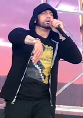
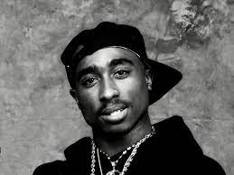

MUZIKA REP
Muzika Rap ose muzika hip-hop, është një zhanër i muzikës popullore që filloi në qytetin e Nju Jorkut në vitet 1970.
Hip hop si një zhanër muzikor dhe një kulturë u formua gjatë viteve 1970 kur partitë në bllok u bënë gjithnjë e më
të njohura në qytetin e Nju Jorkut, veçanërisht në mesin e të rinjve afrikano-amerikanë që banonin në Bronx.
Disa nga reperet me te famshem:
- Eminem
- Drake
- Tupac Shakur
- Nicki Minaj
- Doja Cat
- Travis Scott
- Cardi B
- Kanye West
Eminem
Marshall Bruce Mathers III (lindur më 17 tetor 1972), i njohur profesionalisht si Eminem ,është një reper, tekstshkrues dhe producent
amerikan. Ai vlerësohet me popullarizimin e hip hopit në Amerikën e mesme dhe është vlerësuar nga kritikët si një nga reperët më të
mëdhenj të të gjitha kohërave. Suksesi global i Eminem dhe veprat e vlerësuara konsiderohen gjerësisht se kanë thyer barrierat
racore për pranimin e reperëve të bardhë në muzikën popullore.

Drake
Aubrey Drake Graham është një reper, këngëtar dhe aktor kanadez. Një figurë me ndikim në muzikën popullore bashkëkohore, Drake është
vlerësuar për popullarizimin e ndjeshmërisë së këndimit dhe R&B në hip hop. Duke fituar njohjen duke luajtur si Jimmy Brooks në
serialin dramatik për adoleshentët CTV Degrassi: The Next Generation (2001–08), Drake ndoqi një karrierë në muzikë duke lëshuar
mikshetin e tij debutues Room for Improvement në 2006. Ai e ndoqi këtë me mixtapes Sezoni i Kthimit70 (20 ) dhe So Far Gone (2009)
përpara se të nënshkruante me Young Money Entertainment.
Tupac Shakur
Tupac Amaru Shakur, i njohur gjithashtu me emrat e tij skenik 2Pac dhe Makaveli, ishte një reper dhe aktor amerikan. Ai
konsiderohet gjerësisht si një nga reperët më me ndikim të të gjitha kohërave. Shakur është ndër artistët më të shitur të
muzikës, pasi ka shitur më shumë se 75 milionëdisqe në mbarë botën. Pjesa më e madhe e muzikës së Shakurit është shquar
për adresimin e çështjeve sociale bashkëkohore që rrënuan qytetet e brendshme dhe ai konsiderohet një simbol i aktivizmit
kundër pabarazisë.
